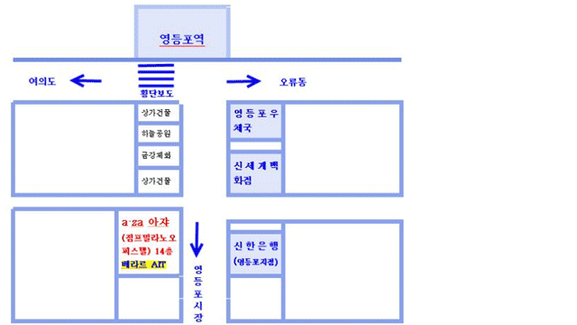
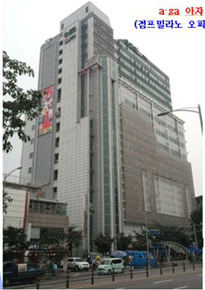
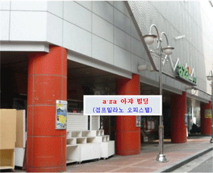

서울 연구소
서울시 영등포구 영중로 28(영등포동 3가 7) 영등포 점프밀라노 오피스텔(a·za 아자빌딩) 1413호
경희우리병원, 삼성탑정형외과 건물 · 신한은행 맞은편



교통편
- 기차
- 영등포역에서 2~3분 거리
- 지하철
- 1호선 영등포역 2~3분 거리
5호선 영등포시장역 2~3분 거리
5호선 신길역(811m), 2호선 문래역(984m) - 버스
(신세계백화점 맞은편) - 462, 5625, 6654, 9408, 300
2, 88, 60, 60-3, 69, 60-1, 7, 10, 15, 30, 40
지선: 6631, 6640B
605, 661, 670, 760, 5714 - 주변시설
- 타임스퀘어, 신세계백화점, 롯데백화점, 롯데마트, 이마트, 홈플러스, 테크노마트, 신도림디큐브시티, 영등포시장, 영등포지하쇼핑센터
- 주변 공원
- 영등포공원, 여의도공원, 샛강생태공원
대구 연구소
대구시 남구 명덕로 10길 37(대명동 2282-48), 리더스 2층 202호
대명동 대구대 후문 앞 · 위챗(WeChat) ID: kmok5959